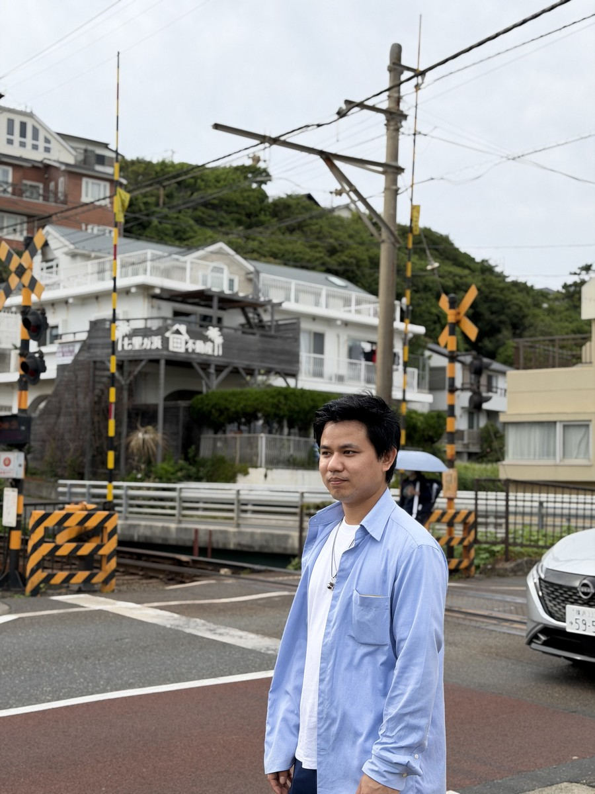

2つの現場で培った「運用力」と「学ぶ力」を、ソフトウェアエンジニアとしての土台にしています。

ミャンマーの大学で英語学を修めた後、Terabit Wave Telecommunication社にて Huawei PSTN通信インフラプロジェクトのサイトエンジニアとして従事。MSAN通信設備の運用・保守、 障害の一次切り分け、AutoCADによる設計図の修正、海外顧客との英語での技術対応を担当しました。
より専門的な開発スキルを身につけるため来日し、日本電子専門学校AIシステム学科でJava・Python・ JavaScript・Web開発・機械学習を学習。卒業研究ではチーム開発でPythonを用いた音声特徴量解析システムを 設計・実装しました。現在は半導体製造装置に関する技術職に従事しながら、ソフトウェアエンジニアとしての キャリアを模索しています。
今後のビジョン：新しい技術を学ぶことが好きで、自ら調査・検証しながら課題を解決することを 得意としています。通信インフラと日本での学びの両方を活かし、ソフトウェアエンジニアとして技術力を高め、 チームに貢献できるエンジニアを目指しています。
機械学習を用いたチーム開発から、個人でのフロントエンド実装まで。
目的：カラオケ文化のように「声を改善し上手に歌いたい」というニーズに対し、 良質な発声フィードバックをいつでも得られる環境を提供すること。 裏声を録音するだけで、純度・力みの無さ・息漏れの少なさ・響きの豊かさ・安定性の5指標をAIが数値化し、 レーダーチャートと改善アドバイスを提示するボイストレーニング支援システムです。
担当：システム設計（要件定義）、データ前処理パイプラインの設計・実装、 音響特徴量抽出によるデータセット作成、FNN回帰モデルの実装。
Canvas APIを用いたレイヤー機能付きのお絵かきアプリ。プロ仕様のレイヤー管理、図形のライブプレビュー、 Undo/Redoなど、実際のイラストツールに近い操作感をゼロから実装しました。
ソフトウェアエンジニアとしての新しいキャリアを探しています。 ご質問やお仕事のご相談など、お気軽にメールでご連絡ください。
tinyelin94jp@gmail.com